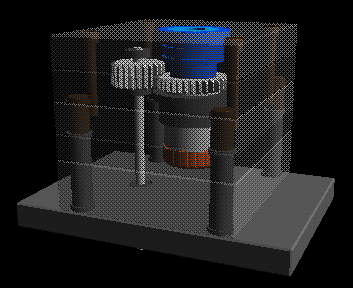

Filler Cap Injection Mold Demo
The demo was designed and documented with the thought that it would be shown as a double headed demo, as this really gets the point across to the audience. But the data can just as easily be used by a single user.
The part to be molded has an internal thread, and the exterior has a series of grooves so a cavity insert could not be rotated. Thus the tool has been designed to be gated through the core with a hot runner system. The actual tool has 4 cavities all driven by the center gear and idlers, but to make the CWA process more clear these have been ommited.


| Go to Page 2 | Go to Page 3 | Go to Page 4 | Go to Page 5 | Go to Page 6 | Go to Page 7 |